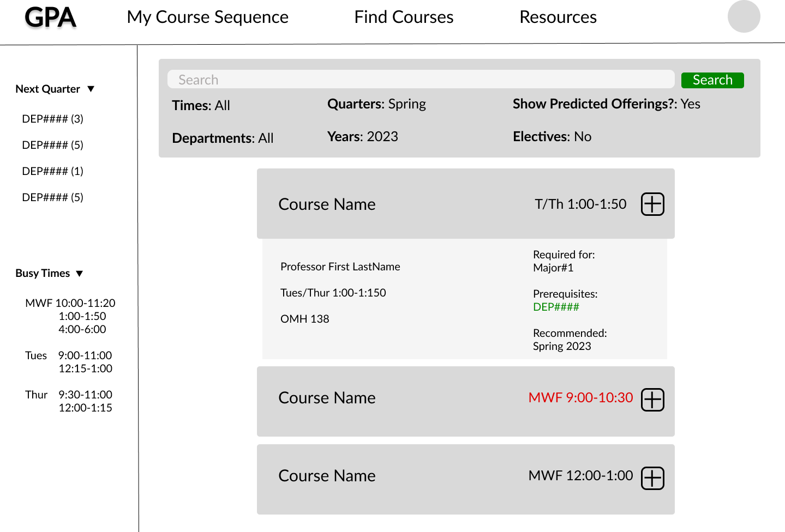
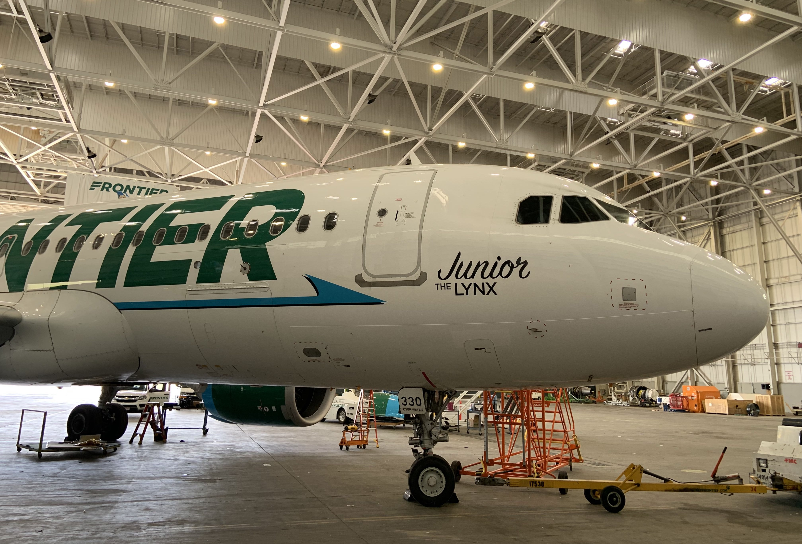
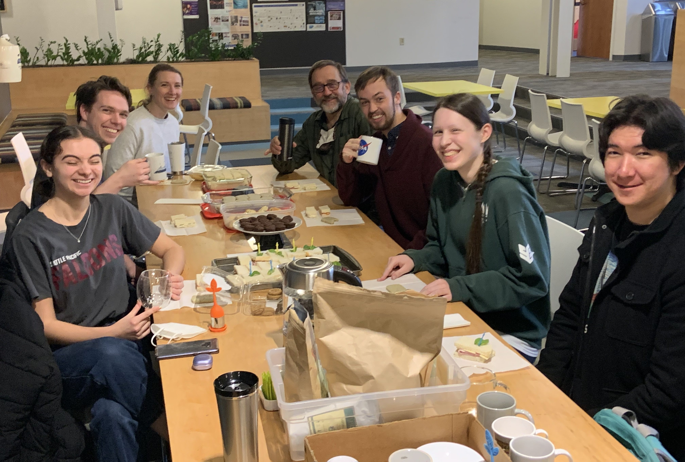
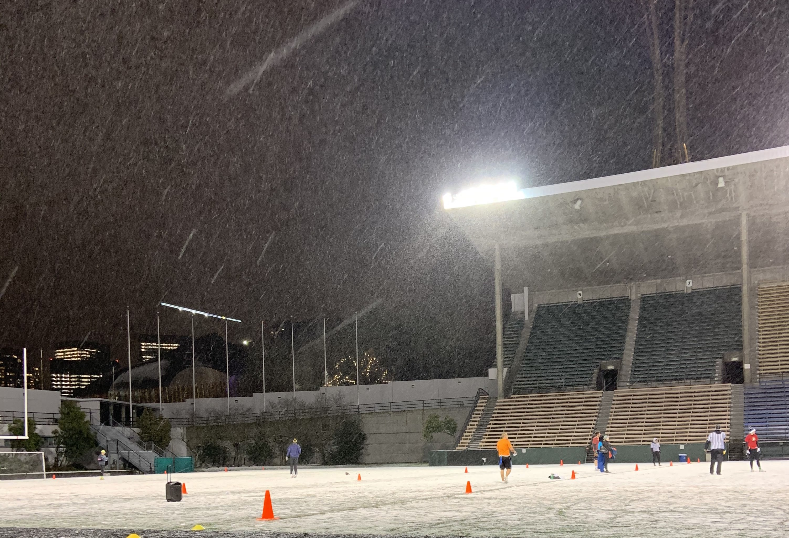
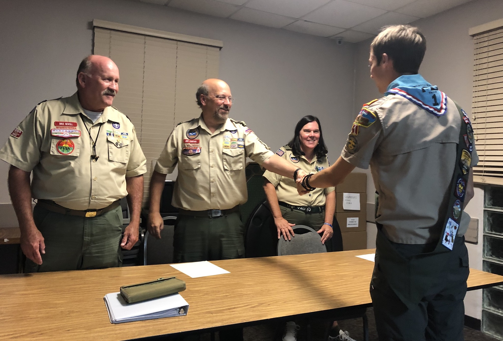

I am a researcher and analyst currently working as a Continuous Improvement Manager at New-Indy Packaging in Los Angeles County, California where I innovate and apply dynamic, data-driven solutions to improve operational efficiency and profitability. I graduated from Seattle Pacific University as a triple major in June 2023, majoring in Computer Science (B.S.), Physics (B.S.), and Honors Liberal Arts(B.A.). A motivated worker, I pride myself on my work ethic and ability to work both individually and as part of a team. I am passionate about telling stories with data to produce tangible results and am particularly experienced in aviation and operations. I am thrilled to say that my award-winning work has been used in over 40 countries across the world and across all 6 continents. Please take a look and feel free reach out to me with any questions or comments. I would love to be in touch.
Recent Projects
Computer Vision Deep Learning in Astronomical Image Classification
I researched and developed and developed a prototype algorithm that can identify astronomical phenomena from photos automatically. Read on Seattle Pacific University's Digital Commons

Graduation Planning App
I'm developed software with a team of peers that will assist students in class planning using robust data stuctures and databases.
See the alpha release
Experience

Inflight Operations Intern
I worked with data and flight attendents to enhance a complex logistical network
Deputy Data Director
I oversaw massive phone banks and managed large scale data for a U.S. Congressional Campaign

Physics Learning Assistant
I guided peers in understanding scientific material while taking pedagogy class to constantly improve
Physics Tutor
I've consulted with students and parents to establish specific learning goals and seen student test scores improve

Football Referee
I've implemented conflict management techniques in a fast-paced environement while recognizing and reacting
to complex situations in real time

Eagle Scout
I led a troop of 60 boys and conducted a project that benefited a local Alzheimer's home
Endorsements
“
Andrew is a dedicated, committed, kind and caring student, who can thrive in any environment. ”
- Chloe Green
Head of Global Opportunities, Roehampton University
“
He knows when and how to ask questions in high levels or details, and is able to assess his skill level and set a reasonable goal and meet it diligently. ”
- Dr. Taiwoo Park
Former Teacher; Science Tech Lead, Amazon Alexa AI
“
Andrew is thoughtful and conscientious. He works diligently at all he does, and attempts to see all sides of a problem in order to bring about good solutions. I have known him to be very persistent and mature for his age. He is particularly skilled at statistics and data analysis. ”
- Rev. Chris Stratton
Academic Dean, Pacifica Christian High School
“
One of the leaders amongst his peers, providing essential help on the data side of the program. He is active, persistent, and consistent, and receives my full endorsement for future employment opportunities. ”
- Adam Tallabas
Fellowship Coordinator, Harley Rouda for Congress
Get In Touch
I'd love to hear more from you and am always looking for new opportunities. Please reach out to me and I would love to connect!

{kind=link}
{kind=link}
{kind=link}
{kind=link}
{kind=link}
{kind=link}
{kind=link}
{kind=link}